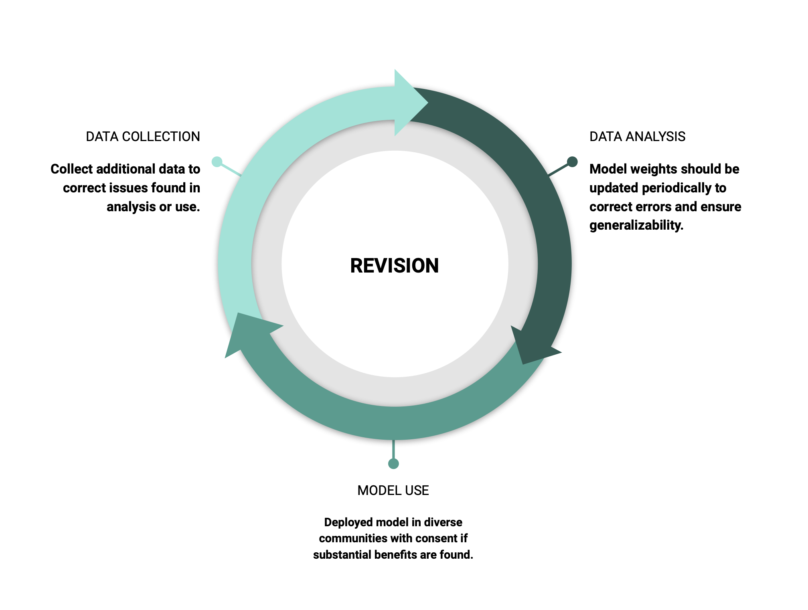

Revision#
As the model is deployed, model retraining will be required as additional data becomes available to ensure bias is minimized and accuracy is maximized. The benefits and harms of data collection and model deployment will also have re-evaluated. This is to confirm AD patients are gaining sufficient benefits from the effort.
Model Retraining#
Additional instances or observations will be collected as the model is deployed. As was suggested for data analysis, biases should be minimized for these new observations. This requires periodically checking that subgroup (e.g. racial) specific accuracy is balanced over time. Retraining the model also has the benefit of adding additional, diverse samples to model training. This improves the generalizability of the model, allowing a greater number of people to benefit from its deployment. Similar considerations as in data collection and analysis should be taken: ensure privacy, consent, bias minimization, and interpretability.
Benefits#
After the model is deployed, benefits from predictions should be confirmed. Those who received early diagnosis should receive improved outcomes (e.g. delayed AD progression or early interventions). These benefits should be distributed across diverse communities. This requires tracking clinical outcomes from those who are subject to the mofidel. If few people benefit from the model, either due to poor model performance or lack of successful intervention plans, the model should be rescinded until an improved plan for maximizing benefits is in place.
 Figure 3. Revision in the data collection, analysis and model use stages.